浅青双对蝉翼与中心小体在背部可辨；tick167展开、tick170合拢，绿色回血粒子叠加仍能辨翼形。
host run-02/jade_cicada-native-f120-t164.png
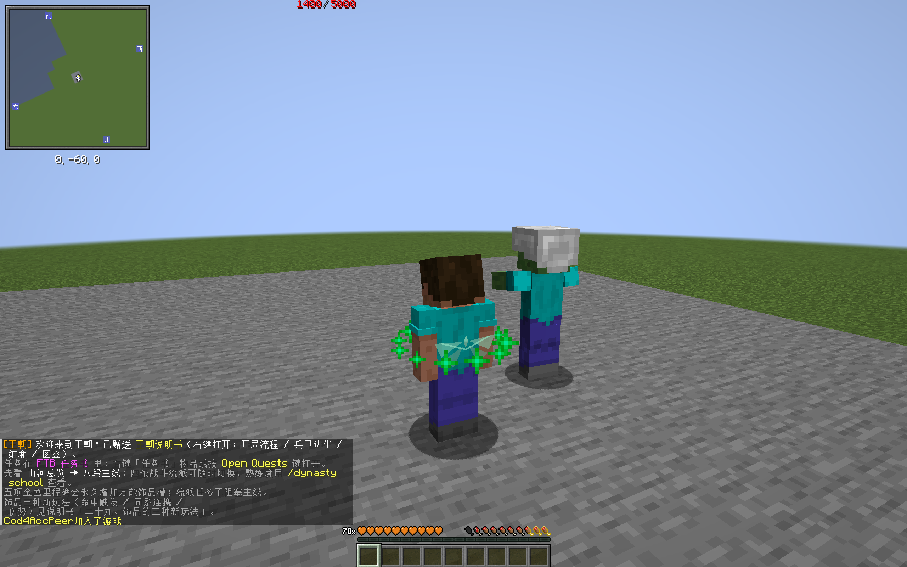
peer run-02-peer/jade_cicada-native-f61-t167.png
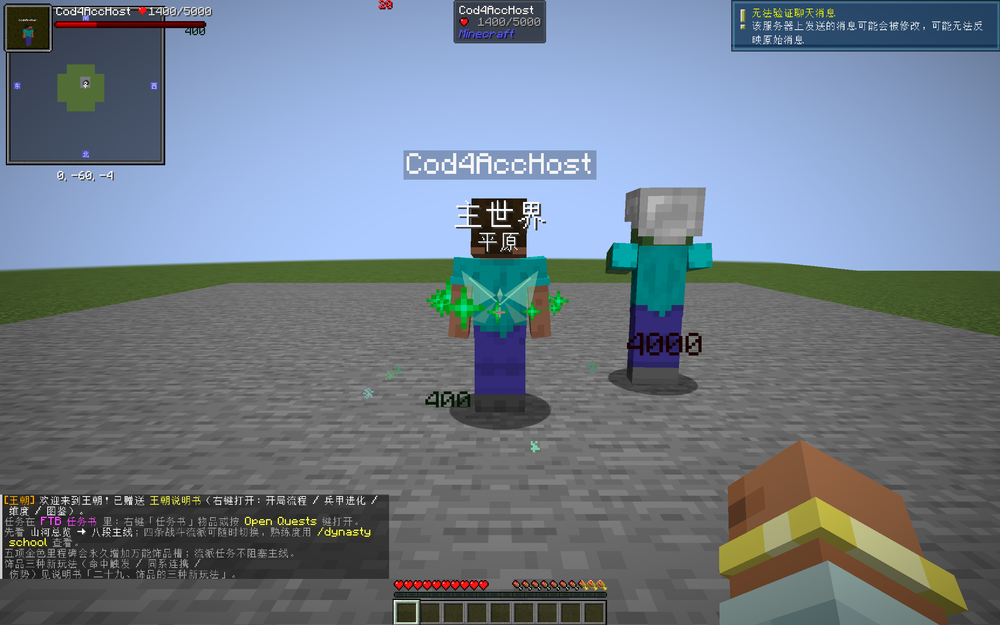
肩侧细青圆环及中央菱形可辨；本机正面受肩膀局部遮挡，旁观背面圆环完整。
host run-02/jade_bi_disc-native-f487-t483.png
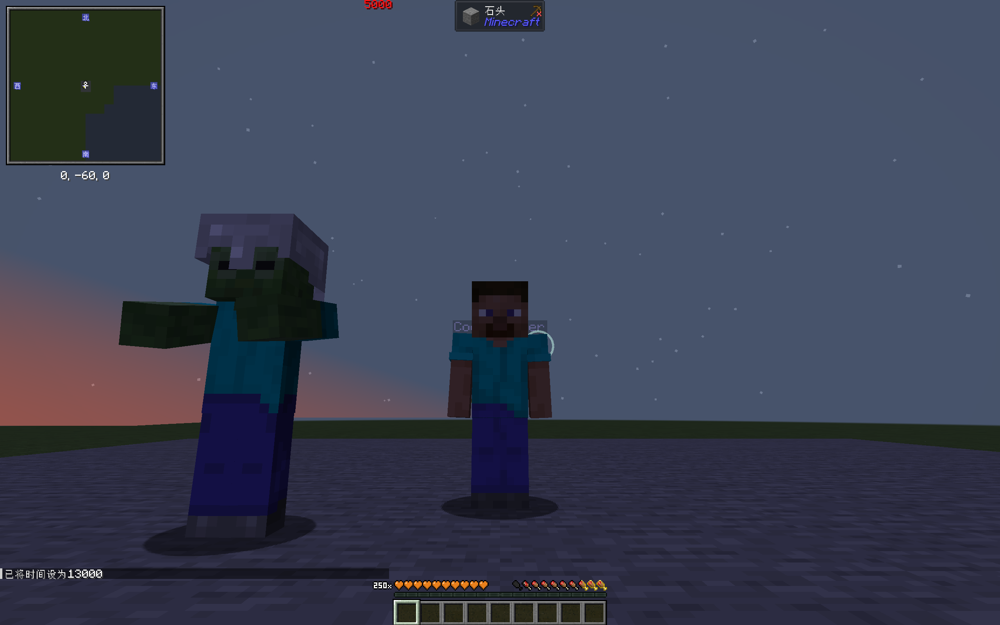
peer run-02-peer/jade_bi_disc-native-f446-t483.png
肩侧白色缺口弧与两小星可辨；本机肩膀局部遮挡合理，不声称全方向完整可见。
host run-02/moon_pendant-native-f718-t723.png
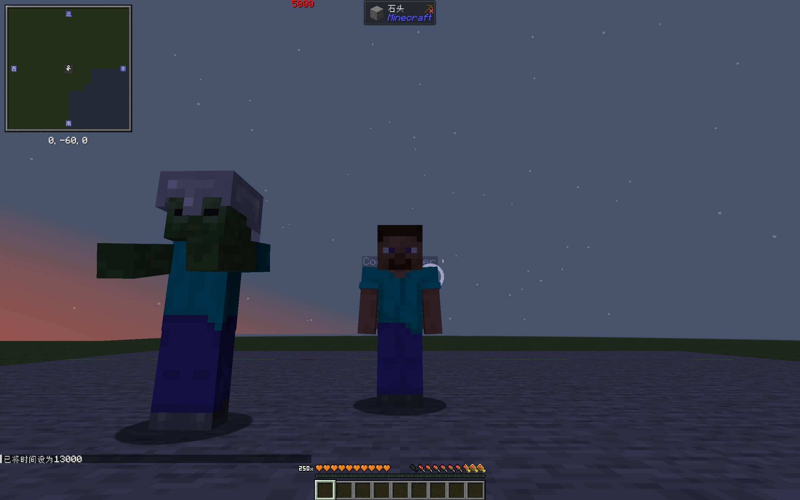
peer run-02-peer/moon_pendant-native-f724-t723.png
头两侧淡金分叉角可辨；中间小点被头遮住，没有改为穿透渲染。
host run-02/qilin_horn_charm-native-f950-t963.png
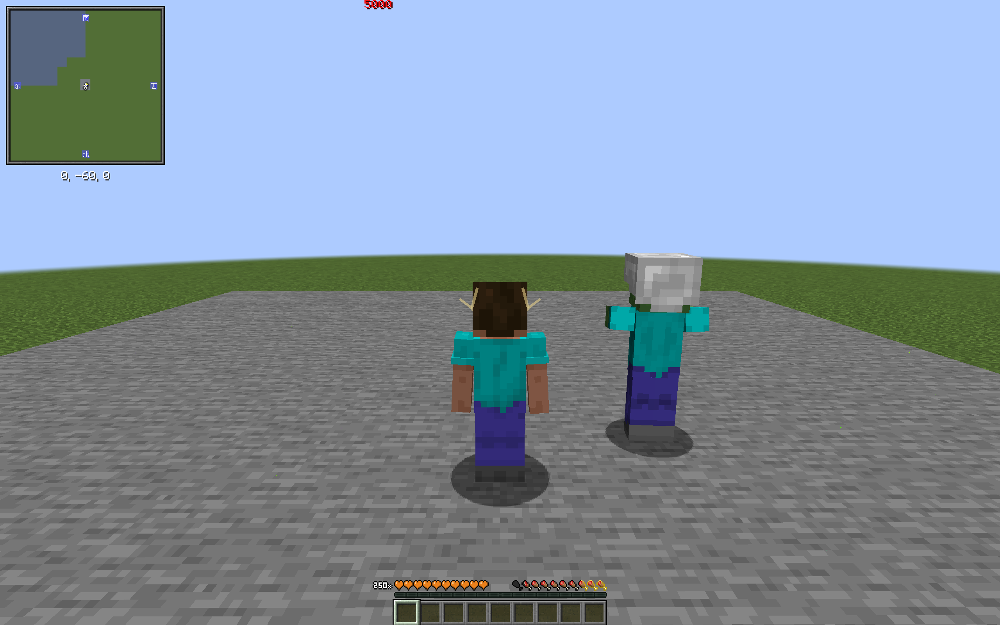
peer run-02-peer/qilin_horn_charm-native-f1000-t963.png
腹前紫色交织线纹与上下收口线可辨；从背部看不到正面图案符合深度遮挡，采用补拍正面图。
host run-04/silk_pouch-native-f137-t192.png
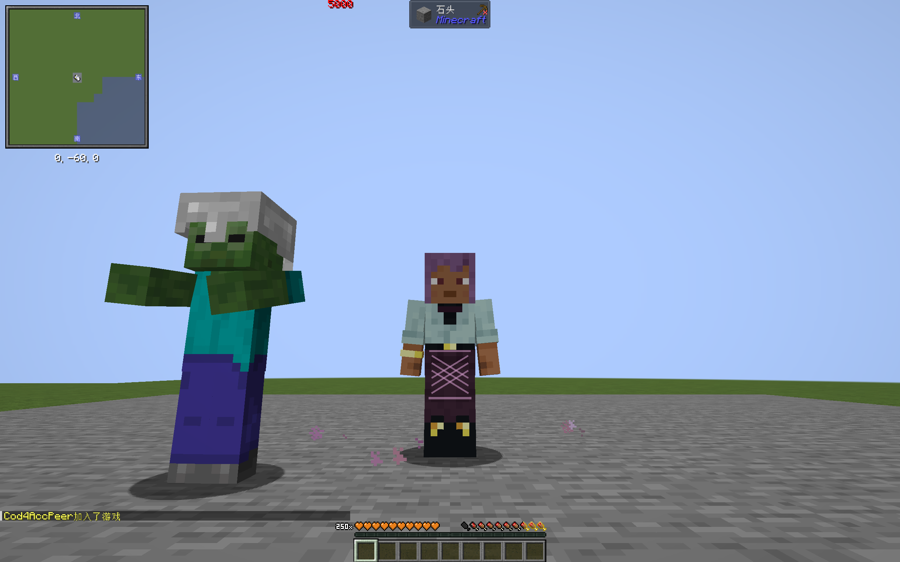
peer run-04-peer/silk_pouch-native-f77-t189.png
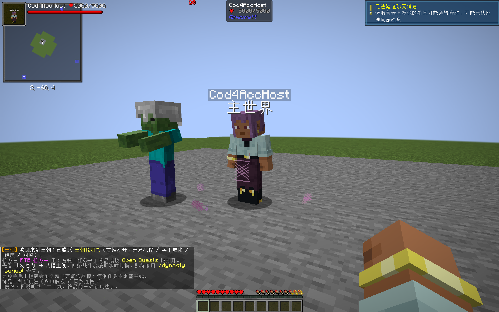
胸前青菱形与两侧折线可辨，原版受击红闪/相机倾斜保留。
host run-03/jade_pendant-native-f396-t380.png
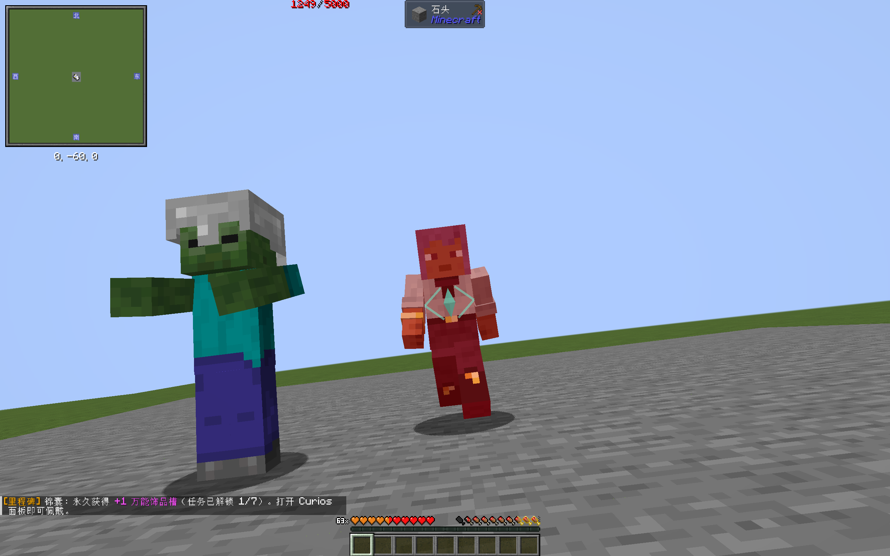
peer run-03-peer/jade_pendant-native-f350-t382.png
胸前金方印与内横竖笔画可辨，首获功名粒子在脚下，未把通用粒子当独立印。
host run-03/gold_seal_charm-native-f644-t612.png
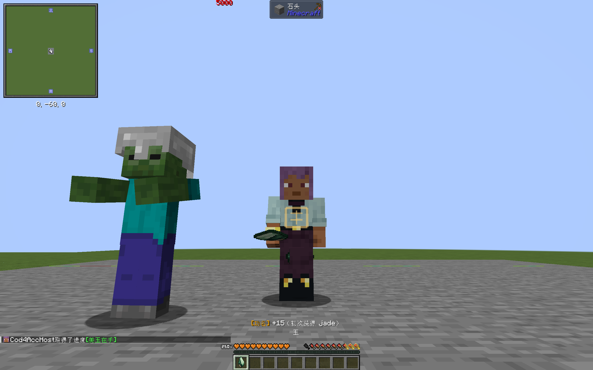
peer run-03-peer/gold_seal_charm-native-f632-t612.png
胸前三片浅青鳞片与上方折线可辨；旁边龙王原生光带/粒子有透明重叠，局部对比减弱，仍可辨本体。
host run-03/dragon_scale_charm-native-f895-t857.png
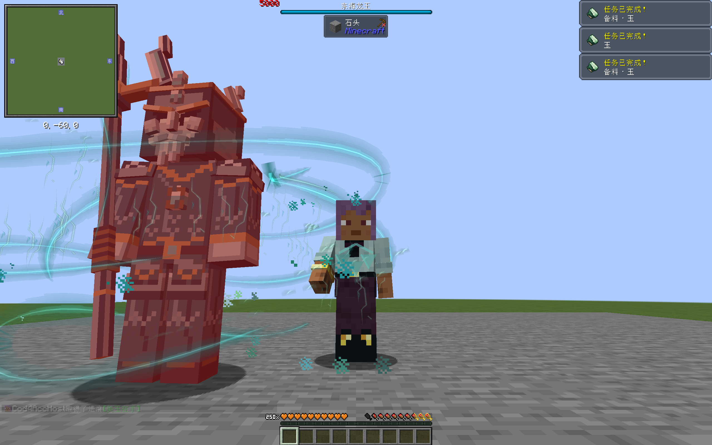
peer run-03-peer/dragon_scale_charm-native-f918-t862.png
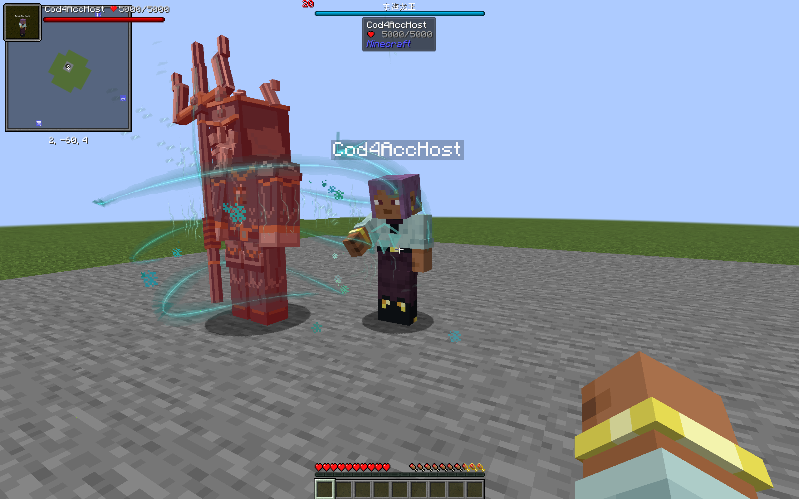
后颈五根短橙羽可辨；本机反复触火时火焰颜色重叠明显，旁观清火后较清楚，不宣称火焰内始终清晰。
host run-02/phoenix_feather_charm-native-f2319-t2420.png
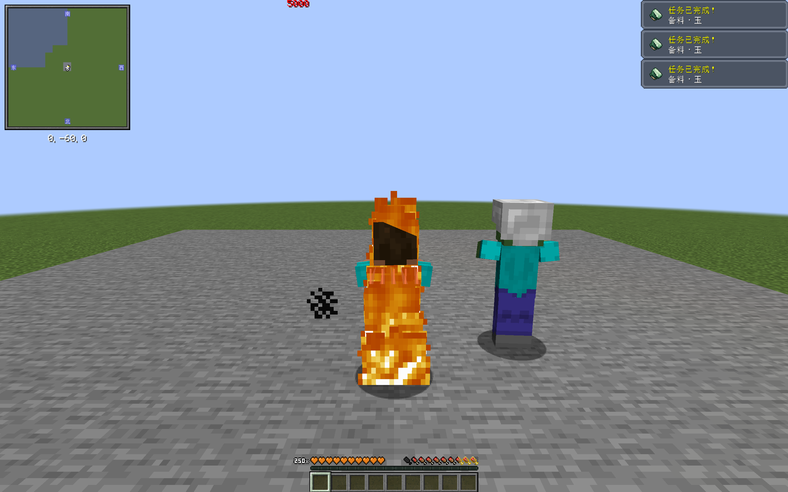
peer run-02-peer/phoenix_feather_charm-native-f2648-t2424.png
腰背三条紫色弯曲尾迹可辨，受击红闪与摆动同时保留；是现有有限几何提示，不是新尾巴模型。
host run-02/fox_tail_charm-native-f3211-t3268.png
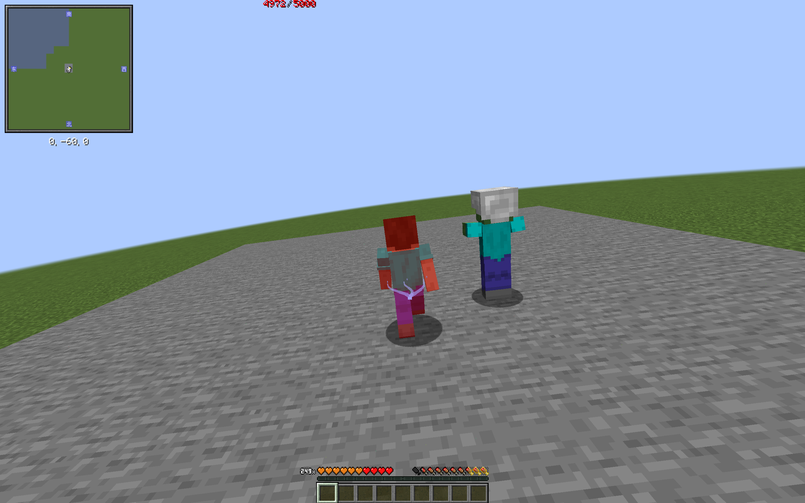
peer run-02-peer/fox_tail_charm-native-f3549-t3267.png